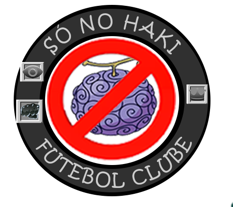

História
Zack é um ex marinheiro, que deixou a marinha e foi treinado por um ex pirata chamado orca, ele se tornou capitão dos piratas do fim e hoje em dia os lidera sendo um supernova.
Poderes e habilidades
CLASSE: Carateca homem peixe
RAÇA: Humano Modificado
Profissão: Arqueólogo
Akuma no mi: None.

Hakis conhecidos: Armamento, observação e rei
Recompensa atual: B$ 200.000.000
Outras:
Manipulação de água
Criação e leve controle de chamas
Habilidades como espadachim
Alta capacidade de combate
Alta força Física
Vivre Card
Aniversário: 13/10
Comida Favorita: Bolo Pudim
Altura: 1,71m
Banhos: Dia sim, dia não, mas há exceções
Curiosidade: Tem uma gaveta com vários laços prontos, porquê não sabe fazer sozinho